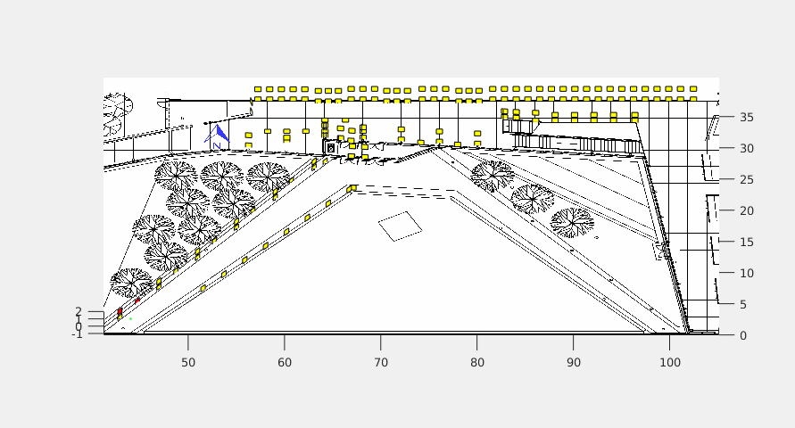
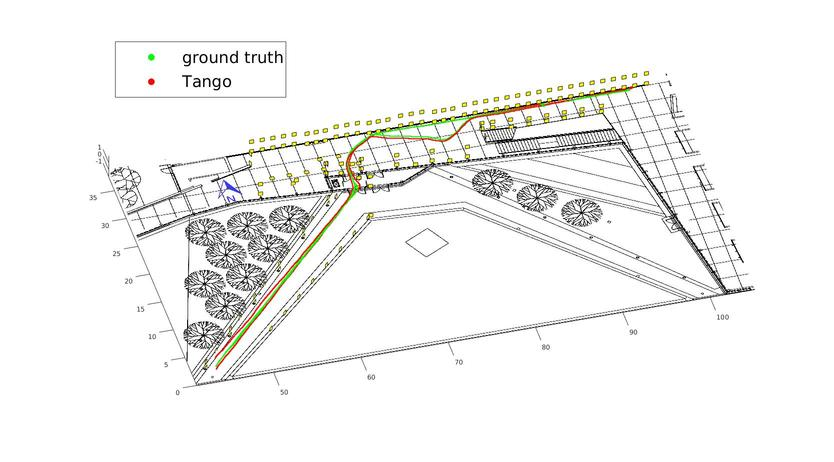
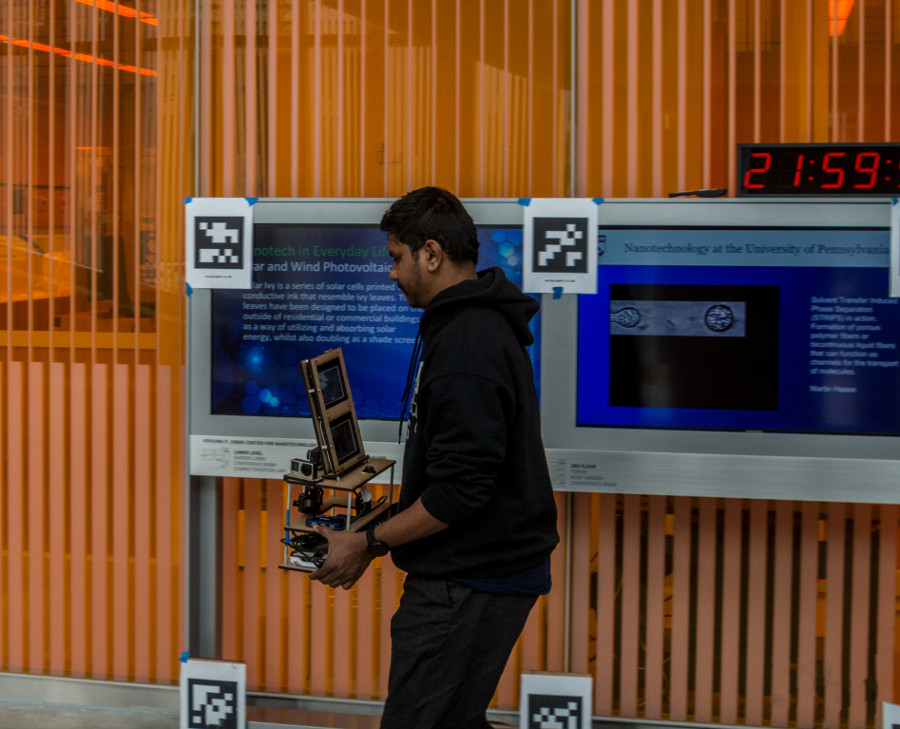

The PennCOSYVIO Data Set

What is PennCOSYVIO?
The PennCOSYVIO data set is collection of synchronized video and IMU data recorded at the University of Pennsylvania’s Singh Center in April 2016. It is geared towards benchmarking of Visual Inertial Odometry algorithms on hand-held devices, but can also be used for other platforms such as micro aerial vehicles or ground robots.
Trajectory
What sets this benchmark apart from previous ones is that it goes from outdoors to indoors:


The total path length is about 150m. We use an optical method to localize the sensors via fiducial markers (AprilTags) to within about 10cm. The animation at the top of the page shows which markers along the path are visible. These “ground truth” positions can be used to benchmark the results of VIO algorithms such as the Google Tango’s: 
Sensors
We loaded a bunch of sensors onto the rig: seven cameras and three IMUs total, including two Google Project Tango tablets, four GoPro Hero 4 Cameras, and a VI (Visual-Inertial) sensor.
Nitin then hauled the rig into and through the Singh center:
 |
 |
Here are the sensor characteristics:
| Sensor | Characteristics |
| C1,C2,C3 |
|
| VI-Sensor |
|
| Tango Bottom |
|
| Tango Top |
|
Citations
If you are using this dataset, please cite the following publication:
@inproceedings{DBLP:conf/icra/PfrommerSDC17,
author = {Bernd Pfrommer and
Nitin Sanket and
Kostas Daniilidis and
Jonas Cleveland},
title = {PennCOSYVIO: {A} challenging Visual Inertial Odometry benchmark},
booktitle = {2017 {IEEE} International Conference on Robotics and Automation, {ICRA}
2017, Singapore, Singapore, May 29 - June 3, 2017},
pages = {3847--3854},
year = {2017},
crossref = {DBLP:conf/icra/2017},
url = {https://doi.org/10.1109/ICRA.2017.7989443},
doi = {10.1109/ICRA.2017.7989443},
timestamp = {Wed, 26 Jul 2017 15:17:30 +0200},
biburl = {http://dblp.uni-trier.de/rec/bib/conf/icra/PfrommerSDC17},
bibsource = {dblp computer science bibliography, http://dblp.org}
}